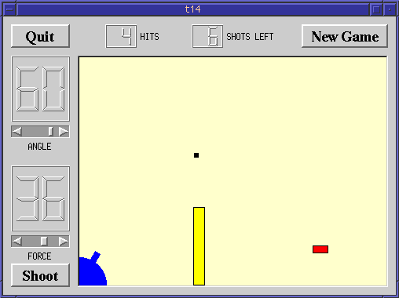

This is the final example, a complete game.
We add keyboard accelerators, introduce mouse events to CannonField. We put a frame around the CannonField and add a barrier (wall) to make the game more challenging.
The CannonField can now receive mouse events to make the user aim the barrel by clicking on it and dragging. CannonField also has a barrier wall.
protected:
void timerEvent( QTimerEvent * );
void paintEvent( QPaintEvent * );
void mousePressEvent( QMouseEvent * );
void mouseMoveEvent( QMouseEvent * );
void mouseReleaseEvent( QMouseEvent * );
In addition to the familiar event handlers, CannonField implements three mouse event handlers. The names say it all.
void paintBarrier( QPainter * );
This private function paints the barrier wall.
QRect barrierRect() const;
This private function returns the enclosing rectangle of the barrier.
bool barrelHit( const QPoint & ) const;
This private function checks if a point is inside the barrel of the cannon.
bool barrelPressed;
This private variable is TRUE if the user has pressed the mouse on the barrel and not released it.
barrelPressed = FALSE;
This line has been added to the constructor. Initially, the mouse is not pressed on the barrel.
Now that we have a barrier there are three ways to miss. We test for the third, too.
This is a Qt event handler. It is called when the user presses a mouse button when the mouse cursor is over the widget.
If the event was not generated by the left mouse button, we return
immediately. Otherwise, we check if the position of the mouse cursor
is within the cannon's barrel. If it is, we set barrelPressed to
TRUE.
Notice that the pos() function returns a point in the widget's coordinate system.
This is another Qt event handler. It is called when the user already has pressed the mouse button inside this widget and then moves/drags the mouse. (You can make Qt send mouse move events even when no buttons are pressed too, see QWidget::setMouseTracking().)
This handler repositions the cannon's barrel according to the position of the mouse cursor.
First, if the barrel is not pressed, we return. Next, we fetch the mouse cursor's position. If the mouse cursor is to the left or below the widget, we adjust the point to be inside the widget.
Then we calculate the angle between the bottom edge of the widget and the imaginary line between the bottom left corner of the widget and the cursor position. Finally, we set the cannon's angle to the new value converted to degrees.
Remember that setAngle() redraws the cannon.
This Qt event handler is called whenever the user releases a mouse button and it was pressed inside this widget.
If the left button is released, we can be sure that the barrel is no longer pressed.
The paint event has two extra lines:
paintBarrier() does the same sort of thing as paintShot(), paintTarget() and paintCannon().
This private function paints the barrier as a rectangle filled with yellow and with a black outline.
This private function returns the rectangle of the barrier. We fix the bottom edge of the barrier to the bottom edge of the widget.
This function returns TRUE if the point is in the barrel, otherwise FALSE.
Here we use the class QWMatrix. It is defined in the header file qwmatrix.h, which is included by qpainter.h.
QWMatrix defines a coordinate system mapping. It can perform the same transformations as the QPainter.
Here we perform the same transformation steps as we do when drawing the barrel in the paintCannon() function. First we translate the coordinate system, then we rotate it.
Now we need to check if the point p (in widget coordinates) lies
inside the barrel. To do this, we invert the transformation matrix.
The inverted matrix performs the inverse transformation that we used
when drawing the barrel. We map the point p using the inverted
matrix and return TRUE if it is inside the original barrel rectangle.
#include <qaccel.h>
We include the class definition of QAccel.
QVBox *box = new QVBox( this, "cannonFrame" );
box->setFrameStyle( QFrame::WinPanel | QFrame::Sunken );
cannonField = new CannonField( box, "cannonField" );
We create and set up a QVBox, set its frame style, and then create
cannonField as a child of that box. Since nothing else is in the
box, the effect is that the QVBox will put a frame around the
CannonField.
QAccel *accel = new QAccel( this );
accel->connectItem( accel->insertItem( Key_Space), this, SLOT(fire()) );
accel->connectItem( accel->insertItem( Key_Q), qApp, SLOT(quit()) );
QGridLayout *grid = new QGridLayout( this, 2, 2, 10 );
grid->addWidget( quit, 0, 0 );
Here we create and set up an accelerator. An accelerator is an object that intercepts keyboard events to an application and calls slots if certain keys are pressed. This mechanism is also called shortcut keys. Note that an accelerator is a child of a widget and will be destroyed when that widget is destroyed. QAccel is not a widget and has no visible effect on its parent.
We define two shortcut keys. We want the slot fire() to be called when the user presses Enter, and we want the application to quit when key Control-Q is pressed. Since Enter is sometimes Return and there are even keyboard with both keys, we make both Enter and Return invoke fire().
grid->addWidget( box, 1, 1 );
grid->setColStretch( 1, 10 );
And then we set up Control-Q to do the same thing as Alt-Q. Some people are more used to Control-Q, and anyway it shows how do do it.
CTRL, Key_Enter, Key_Return and Key_Q are all constants provided by Qt. They're actually Qt::Key_Enter etc. but practically all classes inherit the Qt namespace class.
QVBoxLayout *leftBox = new QVBoxLayout;
grid->addLayout( leftBox, 1, 0 );
leftBox->addWidget( angle );
leftBox->addWidget( force );
We put box (the QVBox), not the CannonField, in the lower right
cell.
The cannon now shoots when you press Enter. You can also position the cannon's angle using the mouse. The barrier makes it a little more challenging to play the game. We also have a nice looking frame around the CannonField.
Write a space invaders game.
(This excercise was first done by Igor Rafienko. You can download his game.)
The new excercise is:
Write a Breakout game and give it to the KDE project.
You may now go on to write your own Qt applications.
[Previous tutorial] [First tutorial] [Main tutorial page]
| Copyright © 1999 Troll Tech | Trademarks | Qt version 2.0.1
|